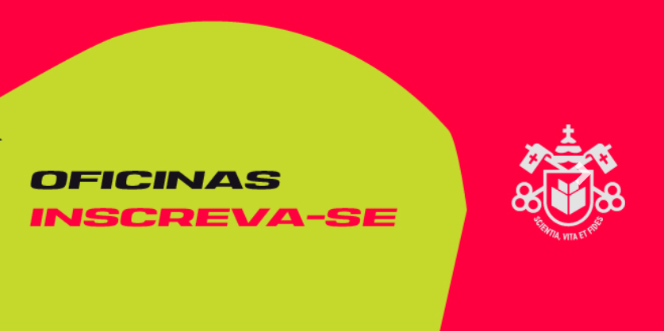
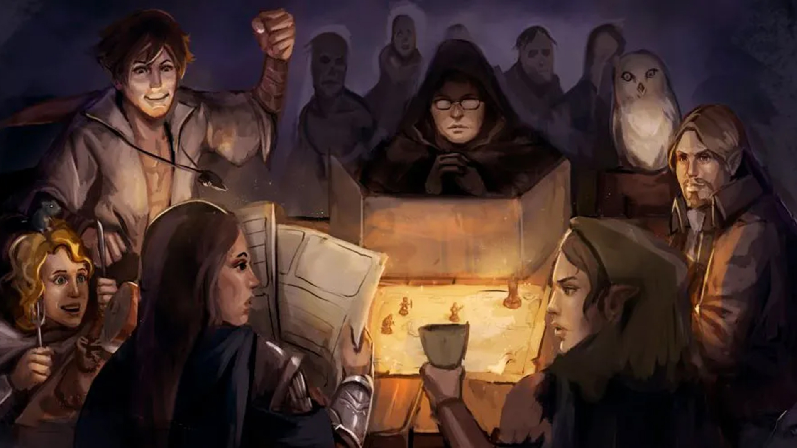
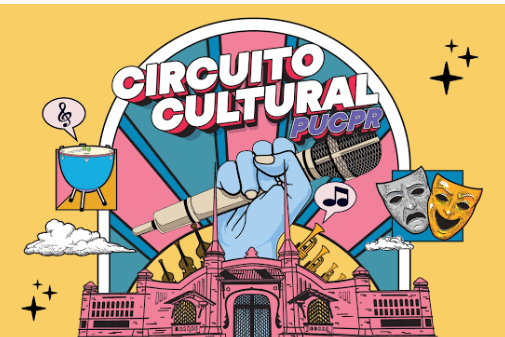

Perfil do pesquisador: do zero à visibilidade
Oficinas voltadas à construção e fortalecimento do perfil de pesquisador,
com foco na criação, atualização e integração de identificadores acadêmicos
como Web of Science Researcher Profile, ORCID e Currículo Lattes.
Local: Biblioteca
Perido: 19/08/26 a 30/09/26
Venha fazer parte!

Grupo de RPG & Habilidades Sociais
situações da história, criando oportunidades para que os participantes pratiquem habilidades
como comunicação, escuta, expressão de opiniões e sentimentos, cooperação, negociação e resolução
de conflitos.
Local: Biblioteca
Perido: Quintas
1° Horário: 13h45 às 15h45
2° Horário: 16h às 18h
Venha fazer parte!

Outros eventos
Conheça outros eventos que acontecem na PUCPR!!!
Venha fazer parte!
Conheça os projetos comunitários Venha fazer parte!
Curso mais foda!!!!!!!!!